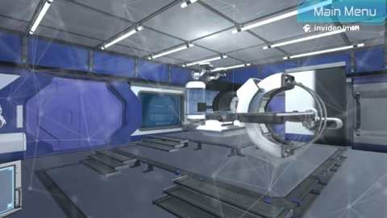

Project Case Study
Bio-Medical Park Malaysia
A first-person 3D walkthrough of a biomedical park, where visitors explore the environment and interact with three video points.
First-person walkthrough
The experience places the visitor inside a 3D environment built from biomedical park assets. Visitors navigate with WASD, walk to marked locations and press E at interactive buttons to play one of three videos about the park and its work.

My contribution
I developed the application solo, contributing to the level design and implementing the save system, first-person navigation, interactive buttons and video playback.